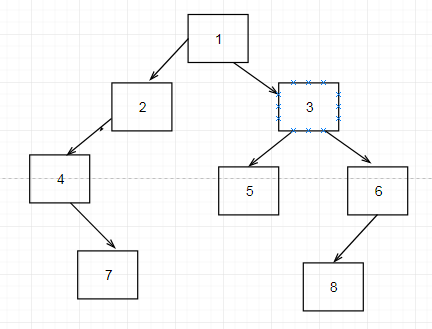
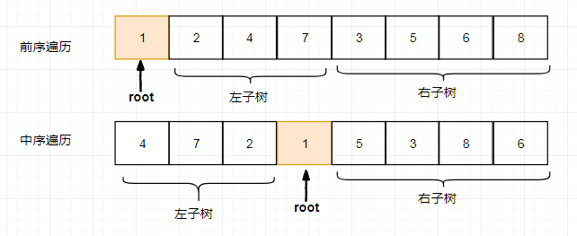
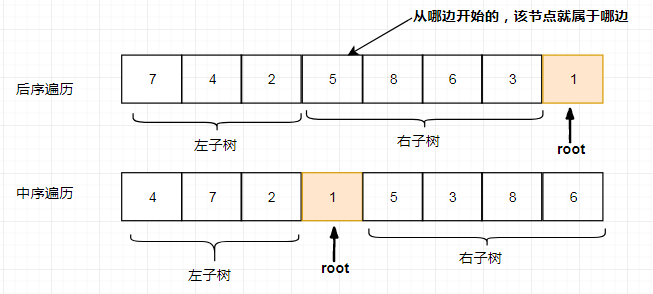

☰ 目录
剑指offer6 编程之美3_9_重建二叉树
原文：https://blog.csdn.net/u010119170/article/details/24599193
1- 题目描述
输入某二叉树的前序遍历和中序遍历的结果，请重建出该二叉树。假设输入的前序遍历和中序遍历的结果中都不含重复的数字。例如输入前序遍历序列{1,2,4,7,3,5,6,8}和中序遍历序列{4,7,2,1,5,3,8,6}，则重建二叉树并返回。
2- 思路
对于前序遍历，它的第一个元素就是根节点；
对于中序遍历，根节点左面是左子树，右面是右子树；
通过递归不断地分割，对每一个节点赋值；
易知前序序列中的第一个结点即为二叉树的根结点，而此结点在中序序列中将二叉树的结点分为两部分，其左边部分即为左子树中的各个结点，其有边部分即为右子树中的各个结点，根据这些我们可以得到左右子树中分别有多少个结点，
假设左子树中有left个结点，右子树中有right个结点，进而又可以将先序序列分为两部分
根结点后面的left个结点即为左子树中的结点，最后面的right个结点即为右子树中的结点。
利用递归可以重复求解，最终得到我们期望的二叉树结果。
3- 重写收获
- 一个清晰的思路对代码的好处是不可说的，我性子就是上来就是写写写，最后是通过不断调试成功，最后看代码，再优化，这样真的浪费时间；可能时间的题少，心里没底，总想着先写点，但是这种思路是不对的；另外就是对递归的理解，这么久还是没理解递归的结构，真是太愚蠢了；
还有一个问题：
问：假如遍历序列中含有相同的结点值时，如和求解？

3.1- 前序+中序 -> 二叉树

//根据二叉树前序和中序遍历构造二叉树
BinaryTreeNode* constructBT(int* preorder, int* inorder, int length) {
if (NULL == preorder || NULL == inorder || 0 >= length) {
return NULL;
}
return constructBTByPreInOrder(preorder, preorder + length - 1, inorder,
inorder + length - 1);
}
//根据二叉树前序和中序遍历构造二叉树，传入先序的头 和 先序的尾， 中序的头 和 中序的尾 [preOreder,PreOrder + len -1], [inOrder, inOrder + len - 1]
BinaryTreeNode* constructBTByPreInOrder(int* startPreorder, int* endPreorder,
int* startInorder, int* endInorder) {
if (NULL == startPreorder || NULL == endPreorder || NULL == startInorder
|| NULL == endInorder) {
return NULL;
}
//创建根结点
int rootValue = startPreorder[0];
BinaryTreeNode* root = new BinaryTreeNode();
root->m_nValue = rootValue;
root->m_pLeftChild = NULL;
root->m_pRightChild = NULL;
//在中序序列中找到根结点
int* rootInorder = startInorder;
for (; rootInorder <= endInorder; ++rootInorder) {
if (rootValue == *rootInorder) {
break;
}
}
//分别求得左右子树的结点数
int leftChildLength = rootInorder - startInorder;
int rightChildLength = endInorder - rootInorder;
//构建左子树
if (0 < leftChildLength) {
root->m_pLeftChild = constructBTByPreInOrder(startPreorder + 1,
startPreorder + leftChildLength, startInorder, rootInorder - 1); /// [preOreder_start + 1,PreOrder + leftChildLength], [inOrder, inOrder_root - 1]
}
//构建右子树
if (0 < rightChildLength) {
root->m_pRightChild = constructBTByPreInOrder(
startPreorder + leftChildLength + 1, endPreorder,
rootInorder + 1, endInorder); /// /// [preOreder_start + leftChildLength+ 1,endPreorder], [inOrder_root + 1, endInorder]
}
return root;
}
3.2 中序+后序-> 二叉树
根据二叉树的中序和后序遍历序列，构造二叉树。思路：利用前面的思路，很容易得到下面这个结果。

//根据二叉树中序和后序遍历构造二叉树
BinaryTreeNode* constructBT(int* inorder, int* postorder, int length) {
if (NULL == inorder || NULL == postorder || 0 >= length) {
return NULL;
}
return constructBTByInPostOrder(inorder, inorder + length - 1, postorder,
postorder + length - 1);
}
BinaryTreeNode* constructBTByInPostOrder(int* startInorder, int* endInorder,
int* startPostOrder, int* endPostOrder) {
if (NULL == startInorder || NULL == endInorder || NULL == startPostOrder
|| NULL == endPostOrder) {
return NULL;
}
//根据后序遍历得到根结点
int rootValue = endPostOrder[0];
BinaryTreeNode* root = new BinaryTreeNode();
root->m_nValue = rootValue;
root->m_pLeftChild = NULL;
root->m_pRightChild = NULL;
//在中序序列中找根结点
int* rootInorder = startInorder;
for (; rootInorder <= endInorder; ++rootInorder) {
if (rootValue == *rootInorder) {
break;
}
}
//分别计算左右子树中的结点数目
int leftChildCount = rootInorder - startInorder;
int rightChildCount = endInorder - rootInorder;
//构建左右子树
if (0 < leftChildCount) {
root->m_pLeftChild = constructBTByInPostOrder(startInorder,
rootInorder - 1, startPostOrder,
startPostOrder + leftChildCount - 1); /// 后序遍历是从后开始的。
}
//构建右孩子
if (0 < rightChildCount) {
root->m_pRightChild = constructBTByInPostOrder(rootInorder + 1,
endInorder, startPostOrder + leftChildCount, endPostOrder - 1);
}
return root;
}
3.3 测试
#include <stddef.h>
#include <iostream>
using namespace std;
int main() {
int n = 0;
cout << "输入测试数据的组数：" << endl;
cin >> n;
while (n > 0) {
cout << "输入序列长度：" << endl;
int len = 0;
cin >> len;
int *x = new int[len];
int *y = new int[len];
cout << "输入先(中)序序列：" << endl;
for (int i = 0; i < len; ++i) {
cin >> x[i];
}
cout << "输入中(后)序序列：" << endl;
for (int i = 0; i < len; ++i) {
cin >> y[i];
}
BinaryTreeNode* binaryTreeNode = constructBT(x, y, len);
cout << "二叉树前序遍历(递归):" << endl;
preorderTravesal(binaryTreeNode);
cout << endl;
cout << "二叉树的后序遍历(递归):" << endl;
postorderTravesal(binaryTreeNode);
cout << endl;
delete x;
delete y;
--n;
}
return 0;
}